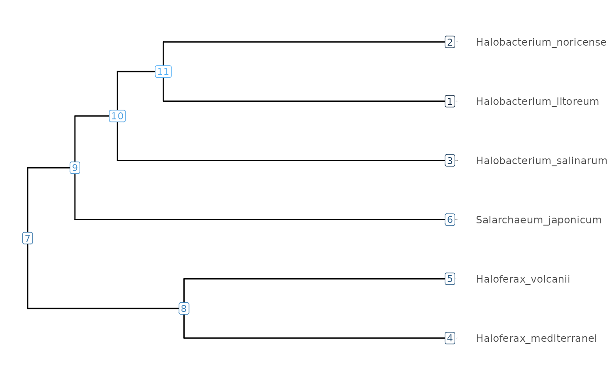
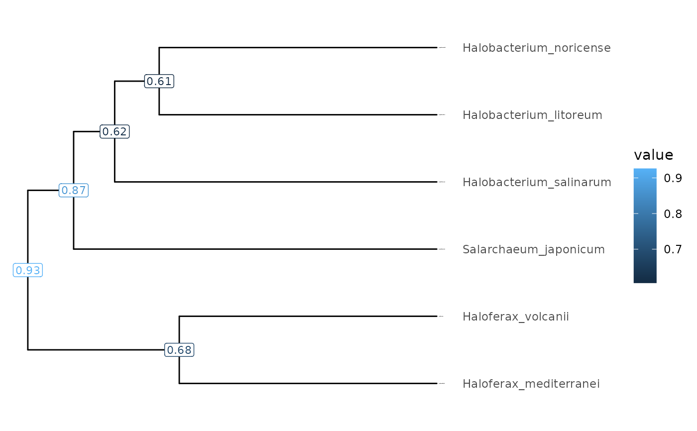

Create a phylogenetic tree using tibble data.
Usage
visualizeTree(
your_tibble,
value = your_tibble$node,
valueround = 2,
outerlabelsize = 0.25,
innerlabelsize = 3,
ynudge = 0,
xnudge = 0
)Arguments
- your_tibble
Tibble data containing species genome information.
- value
Tibble value to label on internal nodes of the tree.
- valueround
Number of integers to round value.
- outerlabelsize
Size of label border.
- innerlabelsize
Overall size of label.
- ynudge
Adjust vertical position of labels.
- xnudge
Adjust horizontal position of labels.
Examples
visualizeTree(tibbleWithValue)
#> Scale for y is already present.
#> Adding another scale for y, which will replace the existing scale.

visualizeTree(tibbleWithValue, value = tibbleWithValue$Strand_Randomisation_Index)
#> Scale for y is already present.
#> Adding another scale for y, which will replace the existing scale.
